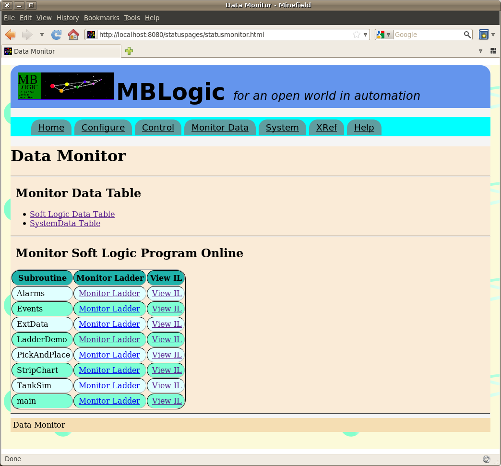
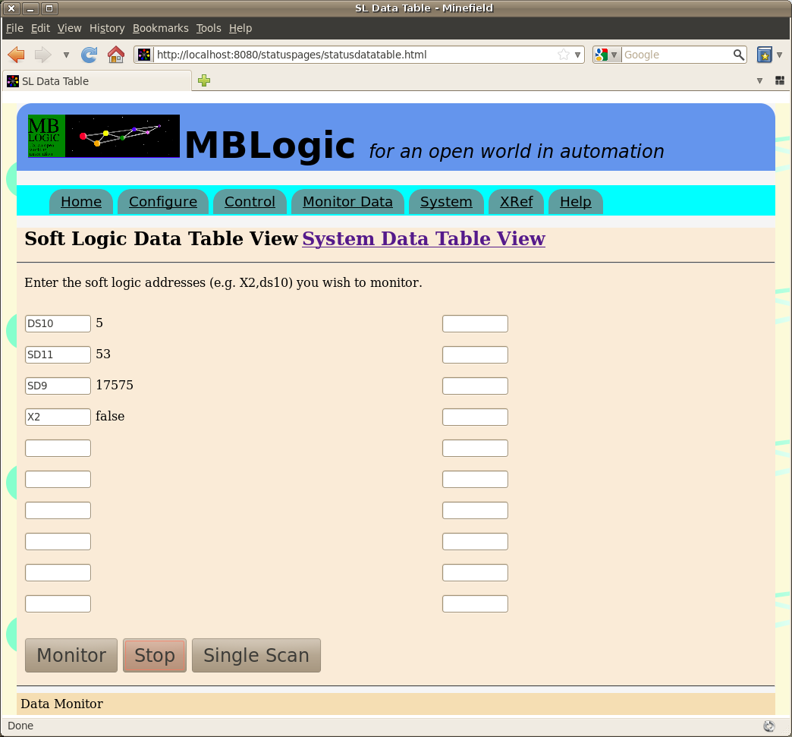
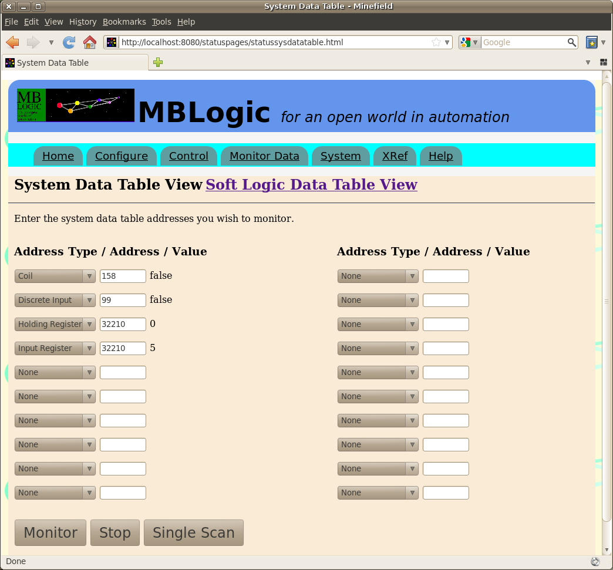
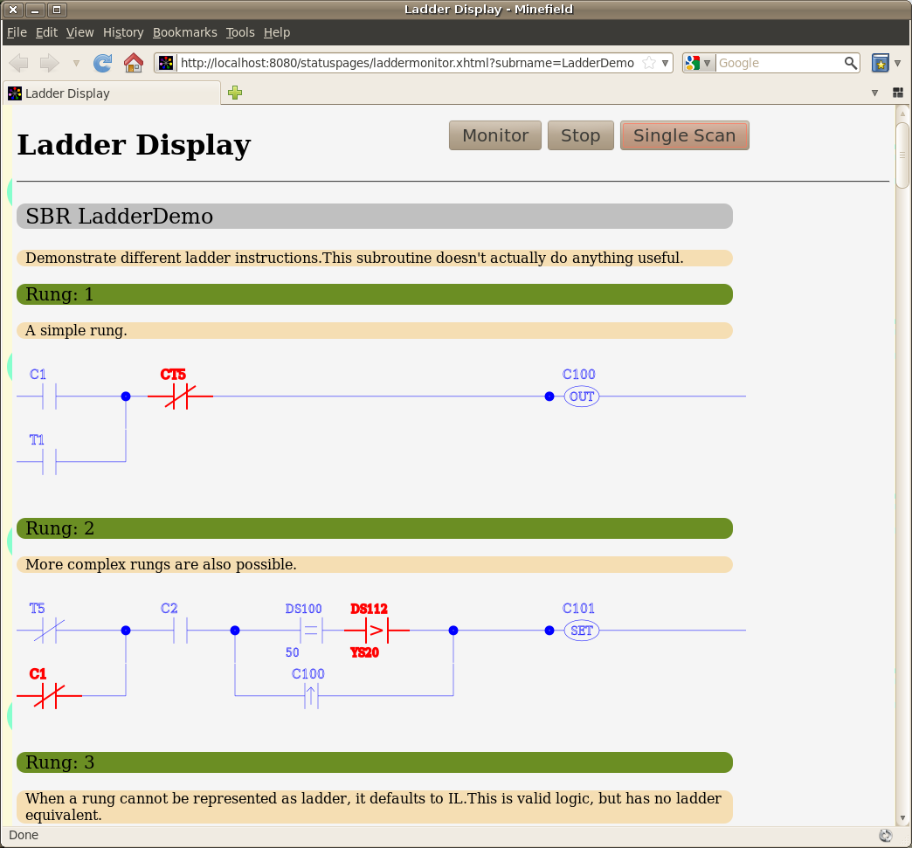
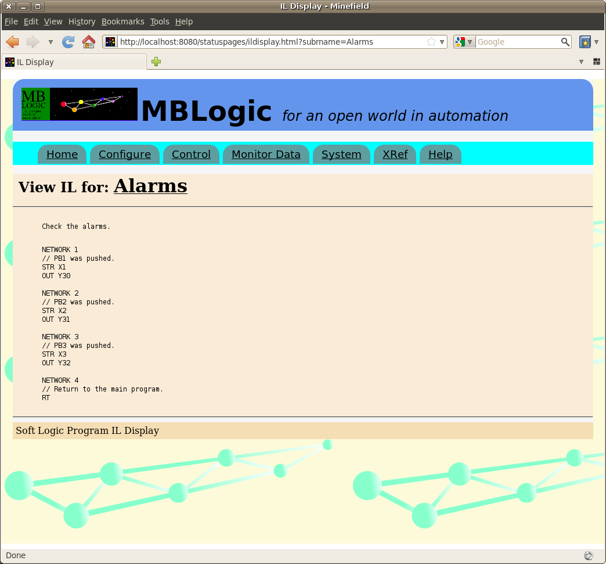

MBLogic
for an open world in automation
MBLogic
for an open world in automation
Help - Monitor Data and Program
Overview
The "Monitor Data and Program" pages allows monitoring of the following items:
- The contents of selected addresses in the soft logic data table. This is the data table which is directly used by the soft logic program.
- The contents of selected addresses in the system data table. This is the data table which links the soft logic, HMI, communications, and other systems.
- The current soft logic program in IL format.
- The current soft logic program in ladder format. The ladder display can be animated with live data to provide on line monitoring of the soft logic program.
The main "Monitor Data" page provides access to additional monitoring pages. Links to pages for viewing the soft logic and system data tables are located in the section titled "Monitor Data Table".
Below that is a section titled "Monitor Soft Logic Program Online". This provides a list of the subroutines in the currently running program, together with links to the ladder and IL monitoring pages.

Monitor Data Table
To monitor addresses in the soft logic data table, enter the desired addresses in the data entry boxes (with one address per box). Next, click on the "monitor" button to continuously poll the system for the requested data and display it on the page. Click on "stop" to stop the update, or "single scan" to request a single update (not continuous) only. If Monitor is selected, updates will continue until either "stop" is selected, or the page is closed.

The system data table can be monitored in a similar manner, with the addition of drop-down menus to select the address type.

Monitor Ladder
The "monitor soft logic program" section allows viewing the current soft logic program in ladder or IL format, and also monitoring the execution of the soft logic ladder program on line.
Viewing a Subroutine in Ladder
To view a subroutine in IL format, click on one of the links in the "Monitor Ladder" column. This will display the selected subroutine in ladder format. Any rungs which are not in valid ladder format will be displayed in IL.
On line montoring can be enabled by selecting the "monitor" button. This will case the page to poll the system for data on a regular basis. Instructions which "true" will change to a different colour. Instructions which are "false" will be the default colour. Selecting "stop" will stop the on-line monitor. Selecting "single scan" will result in a single update.
Only boolean instructions (including boolean compare instructions) can be monitored in ladder format. To see the values present in word instructions, use the data table monitor page.
If a subroutine is changed while the page is displayed, the page will automatically download the new subroutine data and re-display the subroutine using the updated subroutine.

Viewing a Subroutine in IL
To view a subroutine in IL format, click on one of the links in the "View Instruction List" column.
